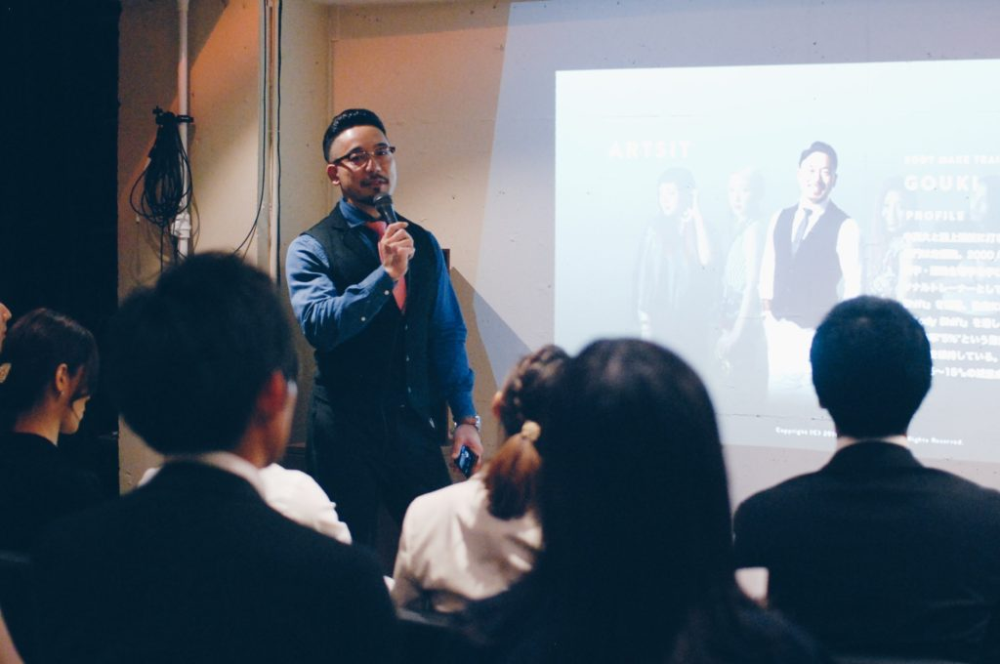

BACK NUMBER

”BEYOND” AT LIFEJUNCTION VOL.06
2018年7月16日、第6回目”BEYOND”AT LIFEJUNCTIONが開催。
ゲストスピーカーに「起業家 中村 勇気氏」をお招きし、「”個の時代になった今、求められる人材はとは？”」”企業寿命よりも個人寿命が長い時代において身につけるべき実力とは？””スキルや専門性だけでなく、事故発見を通して自らの人間力を発揮していくには？”をテーマにお話しいただきました。
ゲストスピーカー
起業家 Gallup認定ストレングスコーチ 中村 勇気
就活支援メディア「Jobweb」にて2年連続で営業トップ成績を達成し執行役員に就任。その後、ランサーズにて部長リーダー職を歴任され、現在は人材開発分野でパーソナルコーチングを企業や個人向けに展開しており、近々法人を立ち上げ予定。
セミナーのタイトルは「Golden Gorilla(ゴールデンゴリラ)」ある一枚の画像を見せて中村氏は言う。 「ここに画像があります。どう思いますか？」そこには”セクシーな女性が写った写真”があった。
しかしよーく見てみるとゴリラの顔が隠れていた。中村氏は言う「私にはゴリラの画像しか見えないんです（笑）」このように物事には実は見落としている部分があります。あなたにとってのゴリラ（見落としているもの）はなんなのか？今日はそれを見つけましょう、となんともキャッチャーな滑り出しで、会場を沸かせるところからセミナーはスタートした。
昨今、企業寿命より個人寿命の方が長い時代になっている。だからこそ企業との関わり方は一昔前みたいに生涯その会社に属する、例えるなら「結婚のように１つに限定するのではなく、「友達」のように複数を持つ時代になっていくと、自身の経験や時代背景の変化を元に語ってくれた。
セミナー中は、ディスカッションや質疑を行うなど、飽きさせない構成で参加者を巻き込んで会場を沸かせていた。
最後は、音楽市場の変化「コンサート→蓄音機→レコード→CD→iTuns→Apple Music」を例えとして上げ、「これからの時代がどう変化していくのか？」「その時に自分たちはどうあればいいのか？」を様々な角度から、分かりやすいスライドとトークで会場を魅了していた。普段聞き慣れない話に夢中になっていた参加者も多見受けられた。今回のBeyondは、自分の将来を見つめ直す貴重な機会になったと言えるだろう。
イベントの様子

”BEYOND” AT LIFEJUNCTION VOL.05
2018年7月10日、第5回目”BEYOND”AT LIFEJUNCTIONが開催。
ゲストスピーカーにTEAM COLERS ボディメイクトレーナーGOUKI氏をお招きし、見た目を変えるトータルプロデュースを指導するアーティスト視点から「相手に確実に印象を残すには？」「初対面から「また会いたい」と思わせるには？」をテーマにお話しいただきました。大好評につきゲストとして2回目の登壇をしていただきました。
ゲストスピーカー
TEAM COLERS | ボディメイクトレーナー GOUKI
中高大と陸上競技に打ち込み、1999年日本ランキング5位。専門は走幅跳。2000年シドニー五輪の選考候補生。大学で栄養学・運動生理学を学び、その知識や経験を生かし、現在はパーソナルトレーナーとして、ボディメイクプログラム『Body shift』を指導。独自に研究を重ねたボディメイク『Body shift』を通し自身でも23kgの減量に成功し、現在は体脂肪率”5％”という驚異的な肉体を作り出しリバウンドしないで体型を維持している。3週間をベースに目的のスタイルを達成させ、5〜15キロの減量成功者を続出させている。
▼TEAM COLERSの詳しい情報はこちら https://www.teamcolors.jp
セミナーでは、見た目を変えることで得られる人生の変化についてGOUKI氏自身の経験を元にぶっちゃけトークをしていただきました。
GOUKI氏が語る経験を元にした破天荒な生き方は、終始笑いが絶えない会場を作り出していました。
最後は懇親会を開催。最近は2、3回目とリピートで参加してくださる方々も増えてきて、コミュニティとして繋がりを生む空間になっています。
イベントの様子

”BEYOND” AT LIFEJUNCTION VOL.04
2018年6月13日、第4回目”BEYOND”AT LIFEJUNCTIONが開催。
ゲストスピーカーに「スローガン株式会社 HR&PR室 室長 採用支援コンサルタント 金子 歩美氏」をお招きし、「市場で評価され、自分の人生を生きる20代のキャリアとは」をテーマにお話しいただきました。
ゲストスピーカー
スローガン株式会社 HR&PR室 室長 採用支援コンサルタント 金子 歩美
2008年に慶応SFC卒業後、Ferrari,Maseratiなどを商材とする外資系企業にて人事・マーケティングなどを経験。その後2011年にレバレジーズ株式会社に転職、社員数50名規模から400名規模になるまでの間、約4年間新卒採用の責任者を担い、無名のベンチャーからの採用ブランディング、採用戦略の立案・実務までを経験。2015年7月よりスローガンに入社、現在に至る。
▼スローガン株式会社の詳しい情報はこちら https://www.slogan.jp
セミナーでは、自身のキャリアを元に「キャリアにおける大事な考え方」「過去2,000人超の面接を通じて、面接で評価される・活躍する人材のマインドセット」などをスピーチしていただきました。

参加者の中でも多くの女性が、彼女の言葉に耳を傾けている姿はとても印象的でした。これからの時代の女性の生き方という点で、一つの指針を見せてくださいました。
イベントの様子
”BEYOND” AT LIFEJUNCTION VOL.03
2018年6月9日、第3回目”BEYOND”AT LIFEJUNCTIONが開催。
ゲストスピーカーにTEAM COLERS ボディメイクトレーナーGOUKI氏をお招きし、見た目を変えるトータルプロデュースを指導するアーティスト視点から「相手に確実に印象を残すには？」「初対面から「また会いたい」と思わせるには？」をテーマにお話しいただきました。大好評につきゲストとして2回目の登壇をしていただきました。
ゲストスピーカー
TEAM COLERS | ボディメイクトレーナー GOUKI
中高大と陸上競技に打ち込み、1999年日本ランキング5位。専門は走幅跳。2000年シドニー五輪の選考候補生。大学で栄養学・運動生理学を学び、その知識や経験を生かし、現在はパーソナルトレーナーとして、ボディメイクプログラム『Body shift』を指導。独自に研究を重ねたボディメイク『Body shift』を通し自身でも23kgの減量に成功し、現在は体脂肪率”5％”という驚異的な肉体を作り出しリバウンドしないで体型を維持している。3週間をベースに目的のスタイルを達成させ、5〜15キロの減量成功者を続出させている。
▼TEAM COLERSの詳しい情報はこちら https://www.teamcolors.jp

セミナーでは、見た目を変えることで得られる人生の変化についてGOUKI氏自身の経験を元にぶっちゃけトークをしていただきました。
オーディエンスはGOUKI氏の華麗なトークを聞き入っていました。
最後は懇親会を開催。ダイエットや体づくりのアドバイスから人生観まで幅広く語っていただき、参加者の質問に1つ1つ丁寧に答えているゲストのGOUKI氏の姿が印象的でした。
イベントの様子
”BEYOND” AT LIFEJUNCTION VOL.02
2018年5月15日、第2回目”BEYOND”AT LIFEJUNCTIONが開催を開催しました。
ゲストスピーカーに「日本IBM株式会社 人材コンサルタント 近藤礼崇氏」をお招きし、人事のプロフェッショナルとして「今世の中からどんな人材が求められているのか？」「成功に導くキャリアの考え方」をテーマにお話しいただきました。近藤氏は「働きがいのある会社」ランキングにてベストカンパニーの受賞した有名ベンチャー企業にて採用リーダーを経験、20代若者を20,000人面談、5,000以上の面接をこなし、売上を入社前から約10倍の200億まで引き上げたご経験を持ち、更なる人事のプロフェッショナルとしてのキャリアを積むべく日本IBMにて人事コンサルタントとしてご活躍されています。
ゲストスピーカー
日本IBM株式会社 | 人事コンサルタント近藤礼崇
大阪府出身。幼少期より、劇団ひまわりに所属し、役者としてミュージカルや舞台演劇に出演。
自分でビジネスがしたいと思い、音大ではなく総合大学へ進学を決意。大学卒業後、新卒で当時社員100名、売上約20億だったITベンチャーへ入社。入社後すぐに新卒採用担当に引き抜かれ、3年目で新卒採用責任者に就任。4年半で4500件の面接を実施し、約350名の新卒社員の採用に関わる。
慶応MCC主催「ラーニングイノベーション論」の受講をきっかけに、HR領域に強い興味を持つ。アナログなHR領域にテクノロジーを用いて課題解決する仕事に関わりたいと思い、外資系企業に転職、人事コンサルタントとして大手企業の人事領域の課題解決に従事。
▼TEAM COLERSの詳しい情報はこちら https://www.teamcolors.jp
セミナーでは「採用側が面接時に見ている3つのポイント」や「キャリアに対する大切な考え方」など近藤氏の経験を元にぶっちゃけトークをしていただきました。
今回も20代を中心に多くの方にご来場いただきました。参加者にとって身近な話題だったこともあり、その後のQ&Aセッションも質問したい方が後を絶たず大いに盛り上がりを見せていました。
最後は懇親会を開催。ゲストの近藤氏と直接話せる貴重な機会ということもあり、近藤氏の周りには輪が。一人一人の質問に親身に答えている近藤氏の姿が印象的でした。
イベントの様子
次回は2018年6月9日。今大注目のボディメイクトレーナーをお呼びして第一印象の作り方について語っていただきます。こちらも残りわずかとなっているのでご予約はお早めにお願い致します。 ▼詳しくはこちらから▼